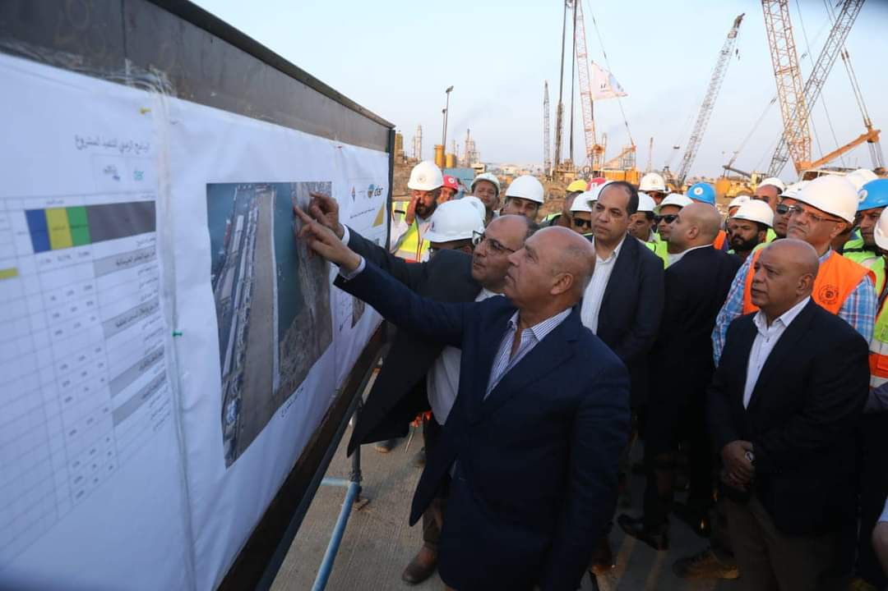

-
 في اطار تنفيذ وزارة النقل للممر اللوجيستي المتكامل ( طنطا / المنصورة / دمياط ) – وزير النقل يجري جولة تفقديه بميناء دمياط البحري لمتابعة معدلات تنفيذ المشروعات الجاري تنفيذها بالميناء
قام الفريق مهندس / كامل الوزير - وزير النقل بجولة تفقديه بميناء دمياط البحري وذلك لمتابعة معدلات تنفيذ المشروعات الجاري تنفيذها بالميناء وفي بداية الجولة التقى وزير النقل برئيس هيئة الميناء وقيادة الهيئة والعاملين بها …
-

وزيرا النقل المصرى والسودانى يترأسان الاجتماع رقم 181 للجمعية العمومية لهيئة وادى النيل للملاحة النهرى
وزيرا النقل المصرى والسودانى يترأسان الاجتماع رقم 181 للجمعية العمومية لهيئة وادى النيل للملاحة النهرية ويبحثان سبل حل مشكلة تكدس الشاحنات على الحدود المصرية السودانية
-

كلمة الفريق مهندس كامل الوزير وزير النقل خلال المؤتمر الصحفي المنعقد يوم الثلاثاء 31 أكتوبر 2023 للإعلان عن انطلاق فاعليات الدورة الخامسة لمعرض ومؤتمر النقل لإفريقيا والشرق الأوسط TransMEA 2023 5 - 8 نوفمبر 2023
كلمة الفريق مهندس كامل الوزير وزير النقل خلال المؤتمر الصحفي المنعقد يوم الثلاثاء 31 أكتوبر 2023 للإعلان عن انطلاق فاعليات الدورة الخامسة لمعرض ومؤتمر النقل لإفريقيا والشرق الأوسط TransMEA 2023 5 - 8 نوفمبر 2023 والذي يقام تحت رعاية وتشريف فخامة السيد رئيس الجمهورية تحت شعار توطين صناعة وسائل النقل في مصر
-

وزارة النقل توقع مذكرة تفاهم مع الحكومة الكورية الجنوبية ممثلة في شركة الكورية s t x الجنوبية
الحكومة المصرية ممثلة في وزارة النقل توقع مذكرة تفاهم مع الحكومة الكورية الجنوبية ممثلة في شركة الكورية الجنوبية بشأن أعمال التنمية والشراكة الاستراتيجية بالمنطقة الاقتصادية الخاصة بجرجوب وتشمل منطقة لوجستية صناعية وميناء جرجوب البحري
.(نقلا عن صفحة وزارة النقل )
-

على هامش مشاركته في انتخابات المنظمة البحرية الدولية - وزير النقل يلتقي الأمين العام للمنظمة البحرية الدولية بلندن
الوزير : كافة الموانئ المصرية تشهد حاليا عمليات تطوير شاملة بهدف تنفيذ توجيهات فخامة الرئيس بجعل مصر مركزا عالميا للتجارة واللوجيستيات
.( نقلا عن صفحة وزارة النقل )
-

وزير النقل :خلال إدلائه بصوته في الانتخابات الرئاسية
اقبال المصريين الكبير على المشاركة في انتخاب رئيس مصر القادم يثبت للعالم ان المصريين دائما شعب مبهر فهم يسجلون ملحمة بطولية ووطنية رائعة ويضربون كعادتهم المثل في حب الوطن
.( نقلا عن صفحة وزارة النقل )